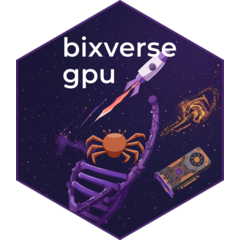

Default parameters for GPU fast clustering
params_sc_fast_cluster_gpu.RdGPU counterpart to bixverse::params_sc_fast_cluster(). Fast
clustering coarsens the cells with k-means, builds a graph over the centroids
and runs Louvain or Leiden on it. The community of each centroid is handed
back to its cells. Only the k-means (and the cell-mediated top-m search) run
on the GPU. The mini-batch k-means knobs are gone: the GPU k-means is
full-batch Lloyd's.
Usage
params_sc_fast_cluster_gpu(
n_centroids = NULL,
k_means_iter = 50L,
k_means_init = NULL,
fixed = TRUE,
quantise = FALSE,
dist = c("euclidean", "cosine"),
cell_mediated = FALSE,
n_anchors = 5L,
centroid_k = 15L,
centroid_graph = list(),
algorithm = c("louvain", "leiden"),
n_iterations = NULL,
beta = 0.01,
min_gain = 0,
local_moving = c("queue", "coloured"),
multi_level = TRUE,
max_evals = 10L
)Arguments
- n_centroids
Integer or
NULL. Number of k-means centroids. IfNULL, defaults tofloor(sqrt(n_cells)). Defaults toNULL.- k_means_iter
Integer. Maximum number of k-means iterations. Defaults to
50L.- k_means_init
String or
NULL. Initialisation method. One of"random","parallel"or"plusplus". IfNULL, picked on the Rust side based on the number of centroids. Defaults toNULL.- fixed
Boolean. Shall k-means run for a fixed number of iterations, without checking for convergence. wgpu only; MLX always runs every iteration. Defaults to
TRUE.- quantise
Boolean. Shall the data buffer be held at fp16 on the GPU. Halves the buffer and helps when the assignment kernels are memory bound. wgpu only. Defaults to
FALSE.- dist
String. Distance for the k-means and the centroid graph. One of
c("euclidean", "cosine"). Defaults to"euclidean".- cell_mediated
Boolean. Shall the cell-mediated centroid graph from Secuer be built instead of the kNN graph on the centroids. Centroids are then linked by the cells that sit near both, so two centroids that are close in space but have no cells between them stay apart. If
TRUE,centroid_kandcentroid_graphare ignored. Defaults toFALSE.- n_anchors
Integer. Number of nearest centroids each cell links to in the cell-mediated graph. Only used if
cell_mediated = TRUE. Defaults to5L.- centroid_k
Integer. Neighbours per centroid in the exact centroid kNN. Only used if
cell_mediated = FALSE. Defaults to15L.- centroid_graph
List. Optional overrides for how the centroid kNN is turned into a graph. See
bixverse::params_knn_graph_defaults(). Only used ifcell_mediated = FALSE. Defaults tolist().- algorithm
String. Community detection on the centroid graph. One of
c("louvain", "leiden"). Defaults to"louvain".- n_iterations
Integer or
NULL. Number of iterations of the community detection. A negative value iterates until stable. IfNULL, the bixverse default for the chosenalgorithm. Defaults toNULL.- beta
Numeric. Leiden only. Randomness of the refinement step. Defaults to
0.01.- min_gain
Numeric. With a negative
n_iterations, also stop once an iteration gains no more than this in modularity. Defaults to0.0.- local_moving
String.
"queue"is Traag's sequential queue."coloured"moves the nodes of one colour class in parallel, which only kicks in on larger levels of the graph. One ofc("queue", "coloured"). Defaults to"queue".- multi_level
Boolean. Shall the communities be aggregated and refined in levels. Defaults to
TRUE.- max_evals
Integer. Cap on the node evaluations per local moving phase, in units of the number of nodes. Defaults to
10L.
Value
A named list with the following elements:
n_centroids - Integer or
NULL. Number of k-means centroids. IfNULL, defaults tofloor(sqrt(n_cells)). Defaults toNULL.k_means_iter - Integer. Maximum number of k-means iterations. Defaults to
50L.k_means_init - String or
NULL. Initialisation method. One of"random","parallel"or"plusplus". IfNULL, picked on the Rust side based on the number of centroids. Defaults toNULL.fixed - Boolean. Shall k-means run for a fixed number of iterations, without checking for convergence. wgpu only; MLX always runs every iteration. Defaults to
TRUE.quantise - Boolean. Shall the data buffer be held at fp16 on the GPU. Halves the buffer and helps when the assignment kernels are memory bound. wgpu only. Defaults to
FALSE.dist - String. Distance for the k-means and the centroid graph. One of
c("euclidean", "cosine"). Defaults to"euclidean".cell_mediated - Boolean. Shall the cell-mediated centroid graph from Secuer be built instead of the kNN graph on the centroids. Centroids are then linked by the cells that sit near both, so two centroids that are close in space but have no cells between them stay apart. If
TRUE,centroid_kandcentroid_graphare ignored. Defaults toFALSE.n_anchors - Integer. Number of nearest centroids each cell links to in the cell-mediated graph. Only used if
cell_mediated = TRUE. Defaults to5L.centroid_k - Integer. Neighbours per centroid in the exact centroid kNN. Only used if
cell_mediated = FALSE. Defaults to15L.The elements of the base list, overridden by
centroid_graph, spliced in at this position.algorithm - String. Community detection on the centroid graph. One of
c("louvain", "leiden"). Defaults to"louvain".n_iterations - Integer or
NULL. Number of iterations of the community detection. A negative value iterates until stable. IfNULL, the bixverse default for the chosenalgorithm. Defaults toNULL.beta - Numeric. Leiden only. Randomness of the refinement step. Defaults to
0.01.min_gain - Numeric. With a negative
n_iterations, also stop once an iteration gains no more than this in modularity. Defaults to0.0.local_moving - String.
"queue"is Traag's sequential queue."coloured"moves the nodes of one colour class in parallel, which only kicks in on larger levels of the graph. One ofc("queue", "coloured"). Defaults to"queue".multi_level - Boolean. Shall the communities be aggregated and refined in levels. Defaults to
TRUE.max_evals - Integer. Cap on the node evaluations per local moving phase, in units of the number of nodes. Defaults to
10L.